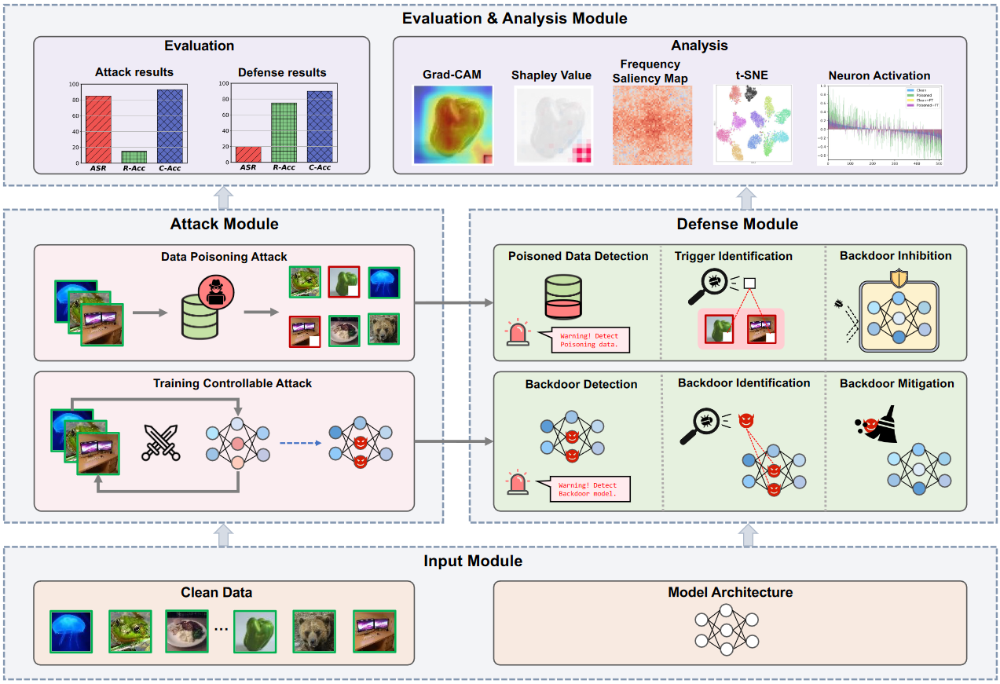

BackdoorBench is a comprehensive benchmark of backdoor learning, which studies the adversarial vulnerability of deep learning models in the training stage. It aims to provide easy implementations of mainstream backdoor attack and defense methods. Currently, we support:

For detailed structure and implementation details, refer to detailed_structure.md.
We also provide a public leaderboard of evaluating above backdoor attacks against above backdoor defense methods.
BackdoorBench will be continuously updated to track the latest advances of backdoor learning. The implementations of more backdoor methods, as well as their evaluations are on the way. You are welcome to contribute your backdoor methods to BackdoorBench.
You can run the following script to configure the necessary environment:
sh ./sh/install.shDetailed packages:
pytorch==1.11
torchvision==0.12
keras==2.7.0
opencv-python==4.5.4.60
pandas==1.3.5
Pillow==8.4.0
scikit-learn==1.0.2
scikit-image==0.18.3
torch==1.10.0
torchaudio==0.10.0
torchvision==0.11.1
tqdm==4.61.0Please first to make a folder for record, all experiment results with save to record folder as default. And make folder for data to put supported datasets.
mkdir record
mkdir data
mkdir data/cifar10
mkdir data/cifar100
mkdir data/gtsrb
mkdir data/tinyPlease note that due to RAM issue, you may fail training on ImageNet. For ImageNet, please refer to the for_imagenet folder for a low-RAM alternative.
This is a demo script for running BadNets attack on CIFAR-10:
python ./attack/badnet_attack.py --yaml_path ../config/attack/badnet/cifar10.yaml --dataset cifar10 --dataset_path ../data --save_folder_name badnet_0_1After attack, you will get a folder with all files saved in ./record/, including attack_result.pt for attack model and backdoored data, which will be used by the following defense methods.
If you want to change the attack methods, dataset, save folder location, you should specify both the attack method script in ../attack and the YAML config file to use different attack methods.
The detailed descriptions for each attack may be put into the add_args function in each script.
This is a demo script for running AC defense on CIFAR-10 for BadNets attack. Before defense you need to run badnet attack on cifar-10 at first. Then you use the folder name as result_file.
python ./defense/ac/ac.py --result_file badnet_0_1 --yaml_path ./config/defense/ac/cifar10.yaml --dataset cifar10If you want to change the defense methods and the setting for defense, you should specify both the attack method script in ../defense and the YAML config file to use different defense methods.
| File name | Paper | |
|---|---|---|
| BadNets | badnets_attack.py | BadNets: Identifying Vulnerabilities in the Machine Learning Model Supply Chain IEEE Access 2019 |
| Blended | blended_attack.py | Targeted Backdoor Attacks on Deep Learning Systems Using Data Poisoning Arxiv 2017 |
| Label Consistent | lc_attack.py | Label-Consistent Backdoor Attacks Arxiv 2019 |
| SIG | sig_attack.py | A new backdoor attack in cnns by training set corruption ICIP 2019 |
| Low Frequency | lf_attack.py | Rethinking the Backdoor Attacks’ Triggers: A Frequency Perspective ICCV2021 |
| SSBA | ssba_attack.py | Invisible Backdoor Attack with Sample-Specific Triggers ICCV 2021 |
| Input-aware | inputaware_attack.py | Input-Aware Dynamic Backdoor Attack NeurIPS 2020 |
| WaNet | wanet_attack.py | WaNet -- Imperceptible Warping-Based Backdoor Attack ICLR 2021 |
For SSBA, the file we used with 1-bit embedded in the images is given at https://drive.google.com/drive/folders/1QU771F2_1mKgfNQZm3OMCyegu2ONJiU2?usp=sharing .
For LC attack the file we used is at https://drive.google.com/drive/folders/1Qhj5vXX7kX74IWdrQDwguWsV8UvJmzF4 .
For LF attack the file we used is at https://drive.google.com/drive/folders/16JrANmjDtvGc3lZ_Cv4lKEODFjRebmvk .
| File name | Paper | |
|---|---|---|
| FT | ft.py | standard fine-tuning |
| FP | fp.py | Fine-Pruning: Defending Against Backdooring Attacks on Deep Neural Networks RAID 2018 |
| NAD | nad.py | Neural Attention Distillation: Erasing Backdoor Triggers From Deep Neural Networks ICLR 2021 |
| NC | nc.py | Neural Cleanse: Identifying And Mitigating Backdoor Attacks In Neural Networks, IEEE S&P 2019 |
| ANP | anp.py | Adversarial Neuron Pruning Purifies Backdoored Deep Models NeurIPS 2021 |
| AC | ac.py | Detecting Backdoor Attacks on Deep Neural Networks by Activation Clustering ceur-ws 2018 |
| Spectral | spectral.py | Spectral Signatures in Backdoor Attacks NeurIPS 2018 |
| ABL | abl.py | Anti-Backdoor Learning: Training Clean Models on Poisoned Data NeurIPS 2021 |
| DBD | dbd.py | Backdoor Defense Via Decoupling The Training Process ICLR 2022 |
This repository is licensed by The Chinese University of Hong Kong, Shenzhen and Shenzhen Research Institute of Big Data under Creative Commons Attribution-NonCommercial 4.0 International Public License (identified as CC BY-NC-4.0 in SPDX). More details about the license could be found in LICENSE.
This project is built by the Secure Computing Lab of Big Data (SCLBD) at The Chinese University of Hong Kong, Shenzhen and Shenzhen Research Institute of Big Data, directed by Professor Baoyuan Wu. SCLBD focuses on research of trustworthy AI, including backdoor learning, adversarial examples, federated learning, fairness, etc.
If any suggestion or comment, please contact us at wubaoyuan@cuhk.edu.cn.